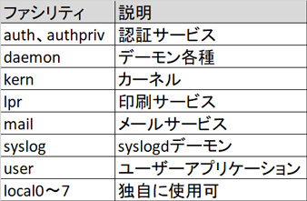
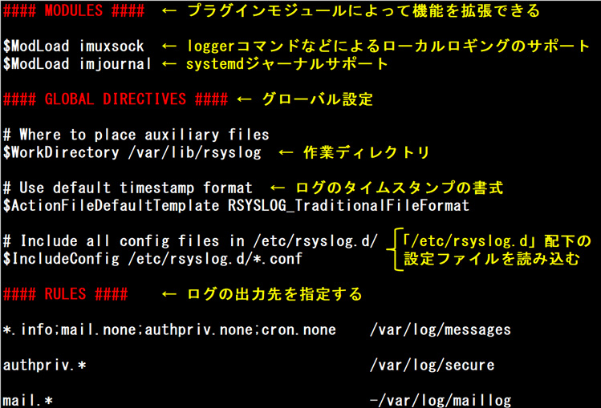
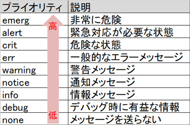
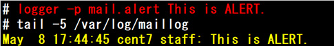

- 問題ID : 15743 システムのログ
- 履歴
正解
dns
解説
「/etc/rsyslog.conf」はrsyslog（reliable-syslog）の設定ファイルです。
rsyslogはsyslog（ログメッセージを送受信する規格）の問題点を克服した次世代のsyslogとして、主要なディストリビューションで採用されています。
rsyslogで扱えるログメッセージの主なファシリティ（ログの送信元）は、以下の通りです。

全てのファシリティを指定するには「*（アスタリスク）」を使います
上表より正解は
・dns
です。
dnsというファシリティはありません。
設定例) 全てのファシリティからの、プライオリティがnotice以上のログを 192.168.100.101 のsyslogサーバに送信する。
.notice @192.168.100.101
参考
syslogはログメッセージを送受信する規格です。クライアント・サーバ型で、サーバ内部で利用されるだけではなく、ネットワーク越しに他の機器（ルータやスイッチなどのネットワーク機器、外部のサーバなど）からのログメッセージを受信することもできます。
ただ、旧来のsyslogには問題点が存在します。代表的なものとして
・ネットワーク経由でのメッセージ送受信にUDP（ポート512番）を使用しているため、サーバにログメッセージが届いていることが保証できない（TCPのように確認応答がない）
・syslogは暗号化機能を持っておらず全てのログメッセージが平文で送受信されるため、ログが覗かれる可能性がある
があります。
これらの問題点を克服した次世代のsyslogとして、syslog-ng（syslog next-generation）やrsyslog（reliable-syslog）が登場しており、主要なディストリビューションで採用されています。
ここでは、LinuC102 Ver10.0の出題範囲であるrsyslogについて詳しく解説します。
rsyslogはrsyslogdというデーモンによって制御されます。
rsyslogの設定ファイルは「/etc/rsyslog.conf」です。
以下は「/etc/rsyslog.conf」からの一部抜粋です。

「/etc/rsyslog.conf」はモジュール設定、グローバル設定、ルール設定（どのログをどこに出力するか）に分かれています。「/etc/rsyslog.d」ディレクトリに拡張子.confのファイルを追加して設定を読み込むこともできます。
設定を変更した場合は、rsyslog.serviceを再起動します。
# systemctl restart rsyslog
rsyslogで扱うログメッセージは、以下のように分類されます。
主なファシリティ（ログの送信元）
プライオリティ（監視レベル）

ファシリティとプライオリティを組み合わせてログを特定し、指定した宛先に出力します。
ルール設定の書式は以下の通りです。
ファシリティ.プライオリティ アクション
・ファシリティとプライオリティは「.（ドット）」でつなぎます
・ファシリティとプライオリティをあわせて「セレクタ」と呼び、セレクタによって扱うログメッセージを特定します
・全てのファシリティや全てのプライオリティを指定するには「*（アスタリスク）」を使います
・プライオリティは、指定したレベル以上のログを出力します（errを指定すると、emerg, alert, crit, errが出力される）。特定のレベルのログだけを指定するには、「=（イコール）プライオリティ」とします。
・ アクションには、出力先を指定します。出力先は、ファイルであれば絶対パス、外部のsyslogサーバであれば「@サーバアドレス」とします。出力先に 「/dev/console」または「/dev/ttyN」を指定すると、ログメッセージはコンソールに表示されます。また、緊急メッセージなど全ユー ザーのコンソールに送信したい場合は「*（アスタリスク）」を指定します。
・アクションの先頭に「-（マイナス）」を付けるとログを非同期で書き 込みます（デフォルトは同期書き込み）。非同期書き込みはディスクへの書き込み完了を待たずに次の書き込み処理を実行できるため、頻繁にログが出力される 場合の負荷を軽減できますが、急な停電時にディスクに書き込まれていない分のログが消失する可能性があります。
・「;（セミコロン）」でつなぐことで、1つのアクションに対して複数のセレクタが指定できます
以下は設定例です。
「auth.* /var/log/secure」
認証サービスに関する全てのプライオリティのログを「/var/log/secure」に出力する。
「*.info;mail.none;syslog.none /var/log/messages」
メールとシスログサービス以外の全てのファシリティからの、プライオリティがinfo以上のログを「/var/log/messages」に出力する。
「kern.=emerg /dev/console」
カーネルに関する、プライオリティがemergのログをコンソールに出力する。
「*.* /dev/console」
全てのファシリティ、プライオリティのログをコンソールへ出力する。
「*.notice @192.168.100.101」
全てのファシリティからの、プライオリティがnotice以上のログを 192.168.100.101 のsyslogサーバに送信する
手動でログメッセージを生成したい時はloggerコマンドを使用します。
書式：logger [オプション] [メッセージ]
「-p」オプションを使用すると、メッセージのファシリティ、プライオリティが指定できます。未指定時はファシリティ、プライオリティを「user.notice」として送信します。
実行例）ファシリティを「mail」、プライオリティを「alert」にしてメッセージ「This is ALERT.」を送信
